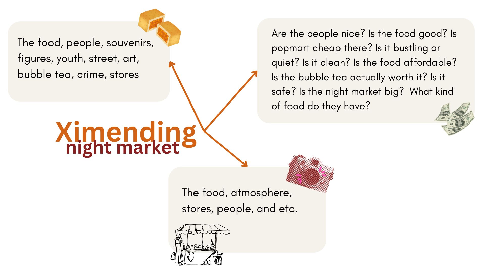

Dalam Inggris RW kami mempunyai tugas untuk menuliskan tentang salah satu topik tentang edutrip kita. Saya memilih untuk menuliskan tentang Ximengding night market. Saya memilih Ximending Night Market karena menurut saya suasana disana sangat bagus dan banyak hal yang bisa ditulis seperti makanan, orang lokal, toko-toko disana, dan banyak lagi.
Ximending: A Place of Memories Wondering where to go in Taiwan? Then Ximending is the right place for you! Ximending is a bustling night market in Taipei with lots of viral delicacies and shops visited by young people. It was before sunset, but Ximending is like a never-ending rainbow. I didn'trainbow I didn’t get to explore everything. There are also tall buildings filled with hidden treasures. Ximending is bustling with young people lining up for delicious food and viral stores. Yummy and Cheap Food In every corner, you will spot the youth of Taipei. This night market will be bustling with locals from Taipei lining up for streetfor the street food. It has mouthwatering food and long lines after work hours. But it is worth the wait is in the 50 -100 NTD range and is somewhat inexpensive in this economy. Usually, when you go to a night market they will sell flashy food that doesn't taste good, but Ximending is the opposite. The most straightforward food will melt and shock you from the inside. Staple and viral shops Ximending is full of viral and staple shops packed with young people shopping. My tour guide gave me two and a half hours and shopping with friends was the main attraction. Are you familiar with the brand Popmart? Ximending has the most complete Pop Mart in Taiwan. As soon as I went inside bright lights were greeting me, collections of toys, and even a photobooth! We went up and down, left and right grabbing toys like the Flash. We even convinced our tour guide to buy a few toys while he accompanied us to pay since it requires a 15+ year identification. Next, we also went to the Muji store which was tricky to find because it was inside a tall building. There was stationery, snacks, and daily necessities. We also went to Don Quijote, small vendors on the street, and others. We spent so much time shopping that we lost track of time and only had fried chicken and squid for dinner. Struggles and fun in Ximending In my opinion, Ximending is very fast-paced, loud, and crowded. But going there with friends changed everything, filled with excitement and laughter together was all I needed to enjoy my time in Ximending and remember it for a long time. Having friends will help you a lot because I would be like a lost turtle long in one place and overwhelmed by crowds. Going to Ximending with friends was one of the best memories in Taiwan because we learned to rely on each other more. The next time you visit Taiwan, put Ximending in your plans and prepare to bring money, friends, and spend lots of time there. It has many cheap and delicious foods. Also, viral, trendy, staple shops are a must-visit. As I mentioned, bring a group of friends to make unforgettable memories and go earlier so you can explore more. Don't be too shocked if you go broke. It's Ximending magic!